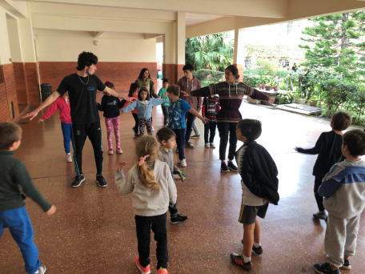
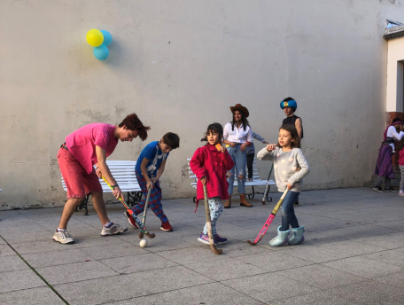

IMATORIO
El imatorio es un espacio que sigue las bases fundamentales que construyó Don Bosco. Es el oratorio que centra la mirada en los jóvenes, generando un lugar de contención y apoyo para todo aquel que lo necesite.
Hoy en día llevamos adelante el oratorio para todos los alumnos y alumnas de primaria de nuestra casa, es decir, chicos y chicas de primero a sexto grado.
¿Cómo lo hacemos?
A través de una tarde de juegos, dinámicas recreativas, escucha, mirada atenta y enseñando valores, compartiendo el patio entre alumnos, exalumnos y docentes de la institución. Terminamos cada sábado con una gran merienda, chicos y grandes, ¡Todos juntos!

